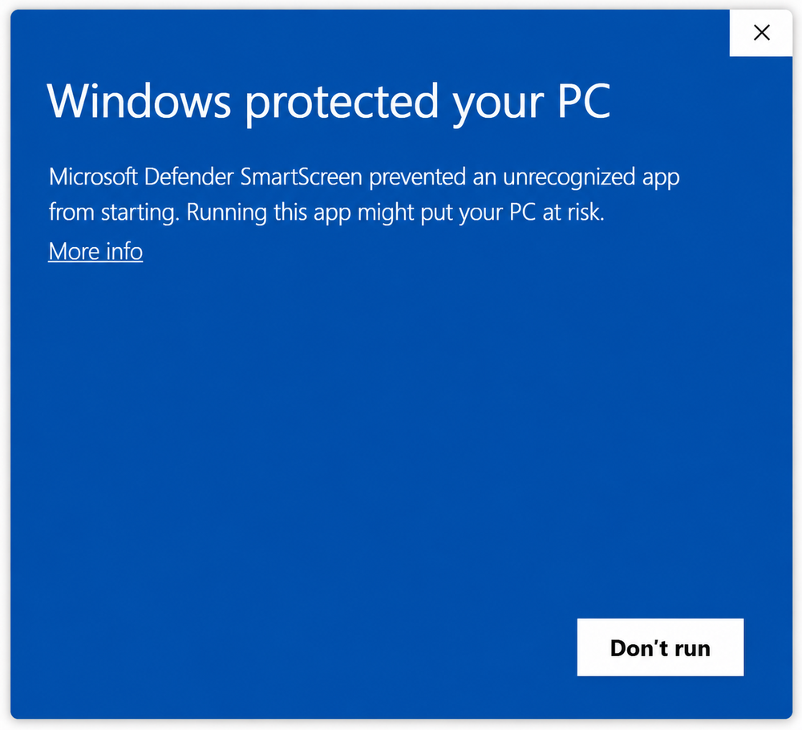
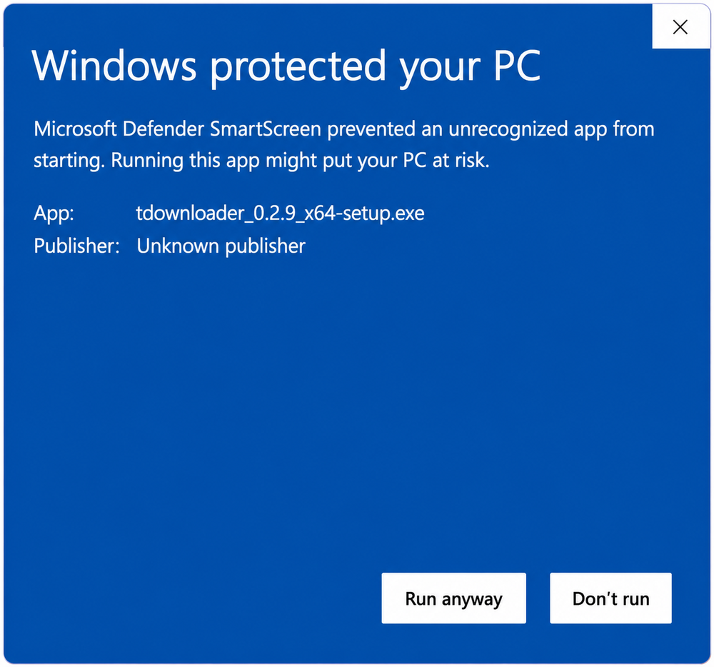
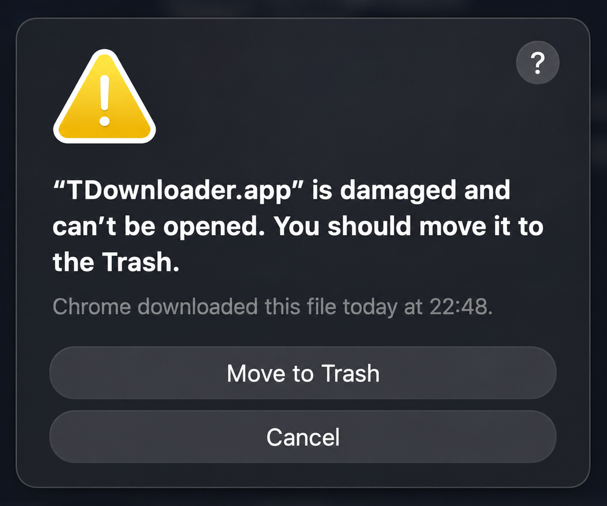
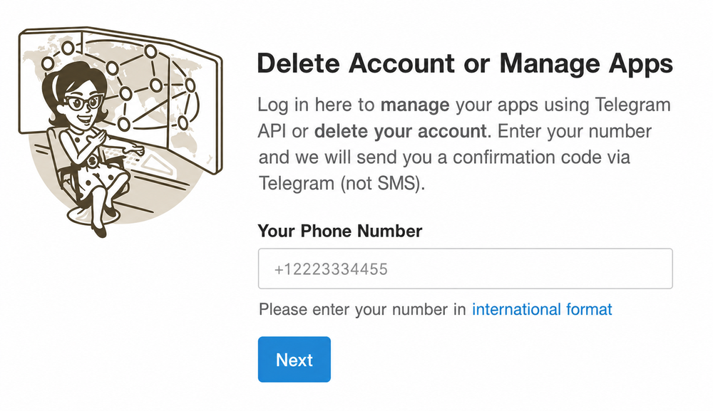
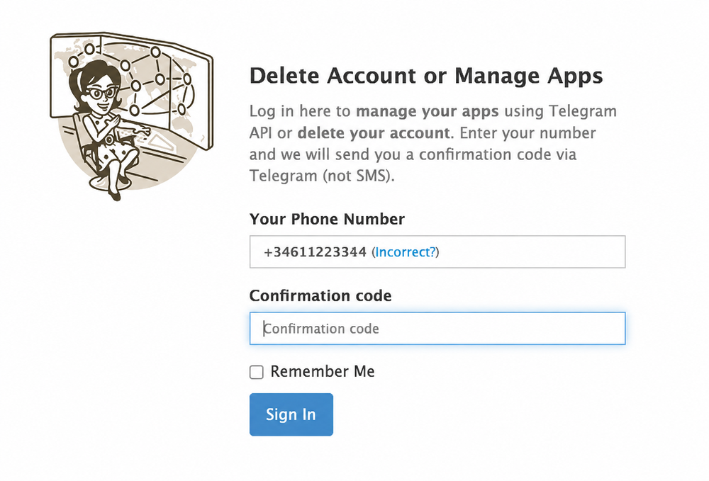
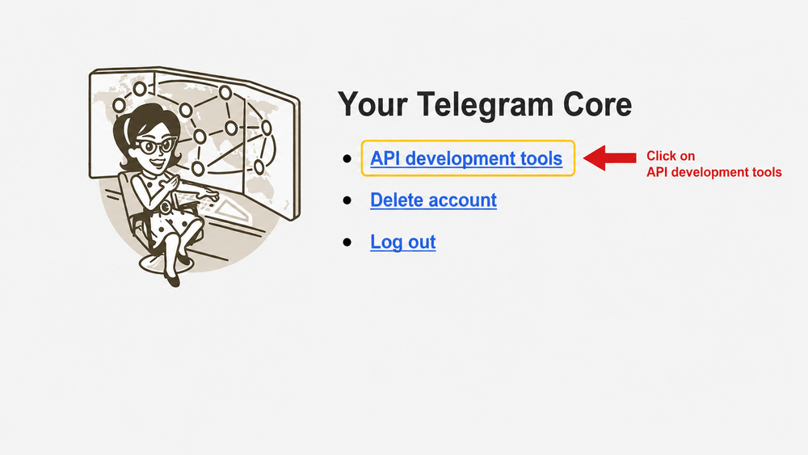
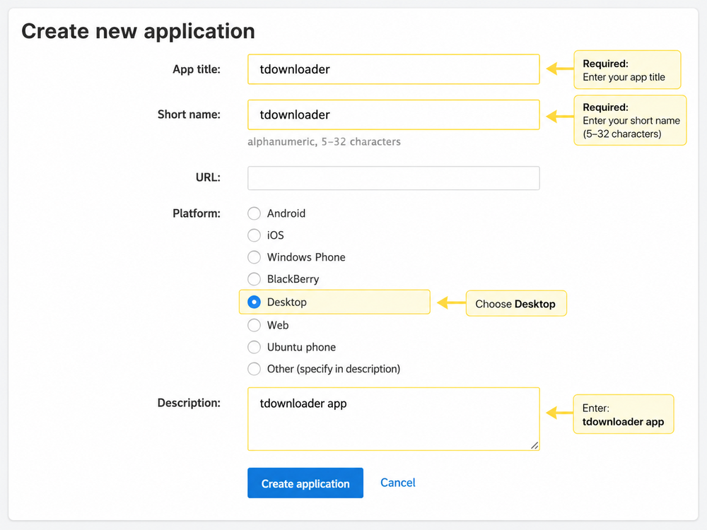
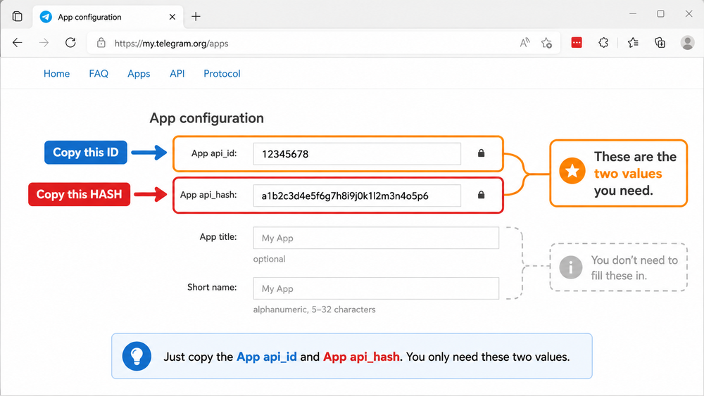

Descarga tdownloader #
Primer paso: descarga la app para tu sistema. Es gratis y sin registro. Después, baja a la sección de tu sistema para instalarla.
Instalar en Windows #
Al abrir el instalador, Windows muestra un aviso azul de SmartScreen. Es completamente normal: aparece con cualquier aplicación nueva que todavía no tiene un certificado de firma de pago. La app es segura; solo hay que decirle a Windows que continúe.
Haz doble clic en el archivo
tdownloader-setup.exeque descargaste.-
Aparece la pantalla azul Windows protegió tu PC (en inglés, Windows protected your PC). Pulsa en el enlace Más información (More info).

Pulsa Más información / More info. -
Se despliega el nombre de la app y aparece un botón nuevo. Pulsa Ejecutar de todos modos (Run anyway).

Pulsa Ejecutar de todos modos / Run anyway. Sigue el instalador con normalidad y abre tdownloader.
Instalar en macOS #
macOS puede decir que la app está dañada y no se puede abrir (o que es de un desarrollador no identificado). No está dañada: es la protección Gatekeeper bloqueando apps que aún no tienen la firma de pago de Apple. Se arregla en 10 segundos.

Arrastra tdownloader a tu carpeta Aplicaciones. En el aviso, pulsa Cancel (NO Move to Trash).
-
Abre la app Terminal (en Aplicaciones → Utilidades, o con Spotlight: Cmd+Espacio y escribe Terminal). Pega este comando y pulsa Intro:
xattr -dr com.apple.quarantine /Applications/tdownloader.appQuita la marca de cuarentena que macOS pone a lo descargado. No pide contraseña y, si va bien, no muestra ningún mensaje.
Abre tdownloader normalmente (doble clic). Ya no volverá a quejarse.
Instalar en Linux #
Hay dos formatos. Usa el que prefieras.
Paquete .deb Ubuntu, Debian, Mint...
Haz doble clic en el archivo para instalarlo desde el Centro de Software, o desde una terminal:
sudo apt install ./tdownloader_*.debAppImage cualquier distribución
El AppImage no necesita instalación: solo dale permiso de ejecución y ábrelo.
-
Clic derecho sobre el archivo → Propiedades → Permisos → marca Permitir ejecutar como un programa. O por terminal:
chmod +x tdownloader-*.AppImage Haz doble clic para abrirlo.
Crear tu API ID y API Hash #
Telegram exige unas credenciales personales (un API ID y un API Hash) para que las aplicaciones accedan a tu cuenta. Se crean una sola vez, son gratis y tardan un minuto. La página de Telegram está en inglés, pero aquí tienes cada paso con su captura.
-
Entra en my.telegram.org. Escribe tu número de teléfono en formato internacional (con el prefijo del país, por ejemplo
+34611223344) y pulsa Next.
Tu número con prefijo internacional → Next. -
Telegram te envía un código de acceso a tu app de Telegram (NO por SMS). Abre Telegram en el móvil o el ordenador: en el chat oficial Telegram verás un mensaje con tu Web login code.
El código llega dentro de Telegram, en el chat Telegram. -
Vuelve a my.telegram.org, escribe ese código en Confirmation code y pulsa Sign In.

Pega el código → Sign In. -
Pulsa en API development tools.

Clic en API development tools. -
Rellena el formulario Create new application con estos valores y pulsa Create application:
- App title
tdownloader- Short name
tdownloader(entre 5 y 32 letras o números)- URL
- Déjalo en blanco
- Platform
- Elige Desktop
- Description
tdownloader app(o déjalo en blanco)

Rellénalo así y pulsa Create application. -
Verás dos valores: App api_id (un número) y App api_hash (una cadena larga de letras y números). Copia los dos. Son los únicos que necesitas.

Copia App api_id y App api_hash. Vuelve a tdownloader: pega el api_id en el campo API ID y el api_hash en API Hash, añade tu teléfono y pulsa Enviar código. ¡Listo!